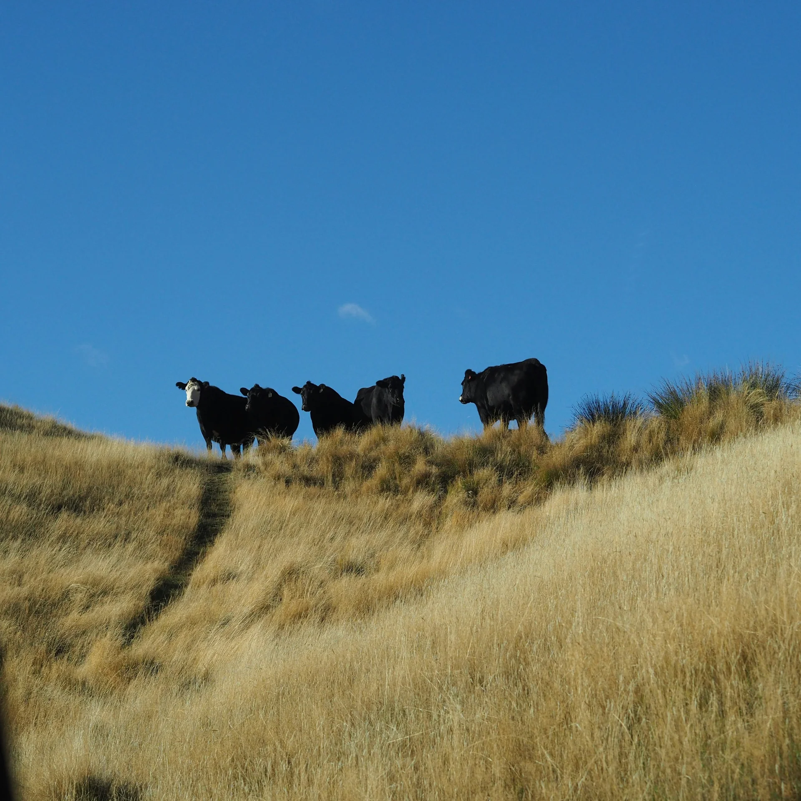
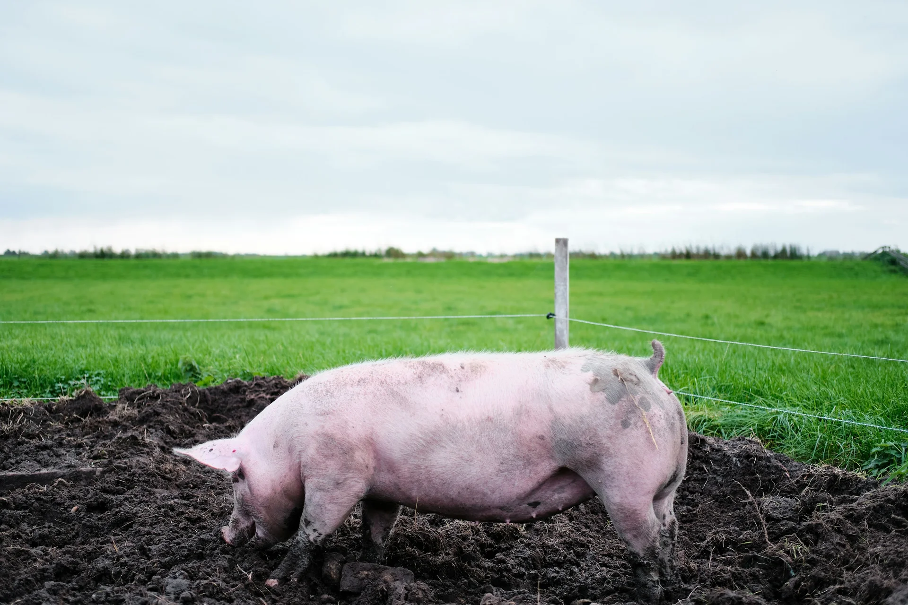
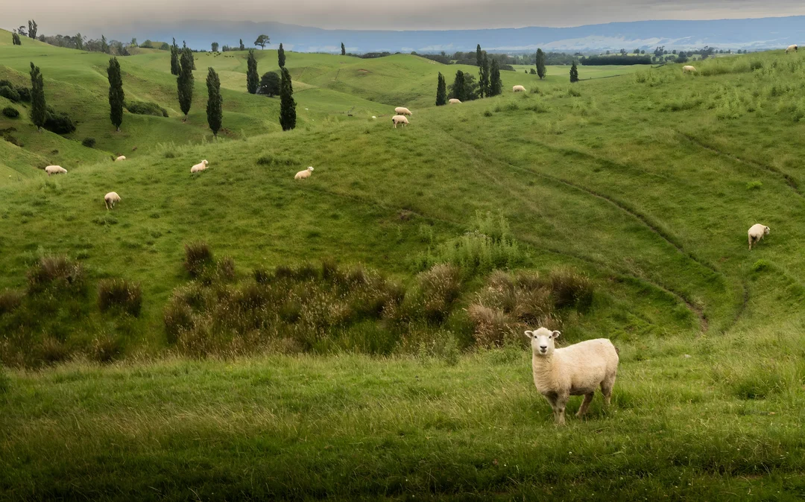
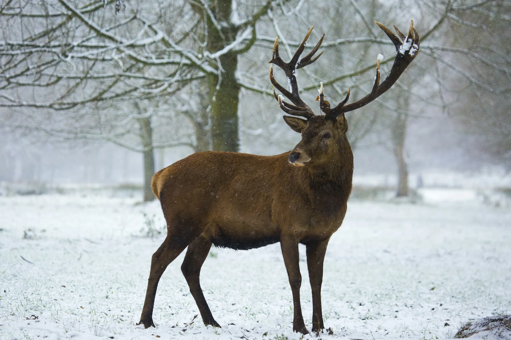
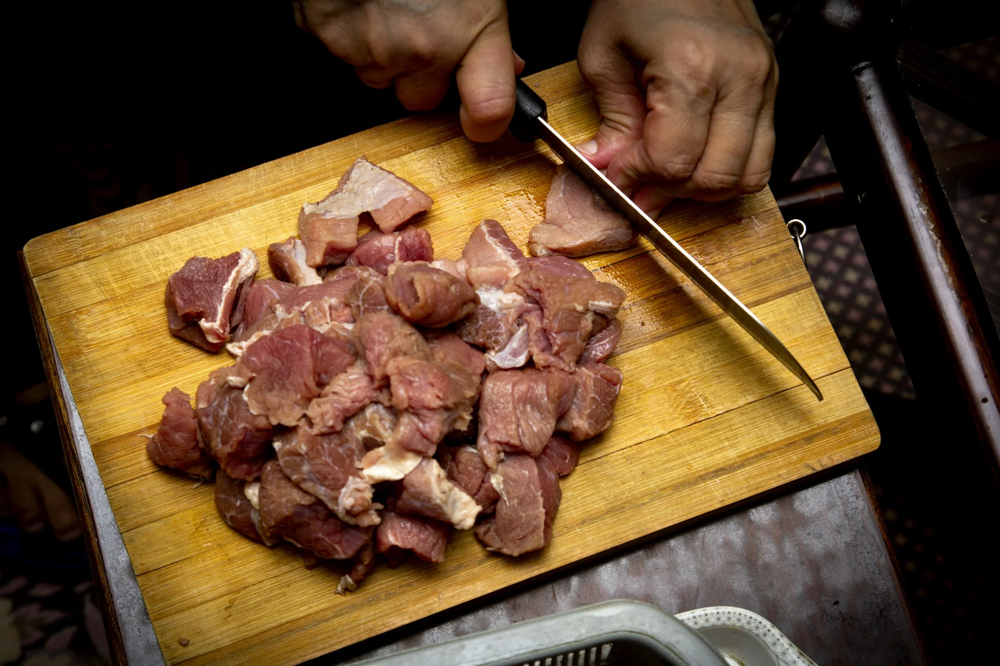
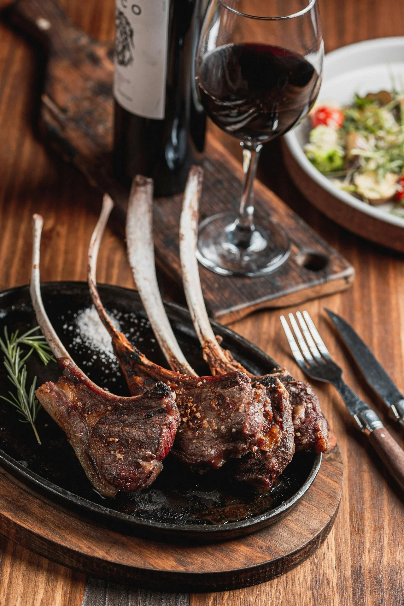
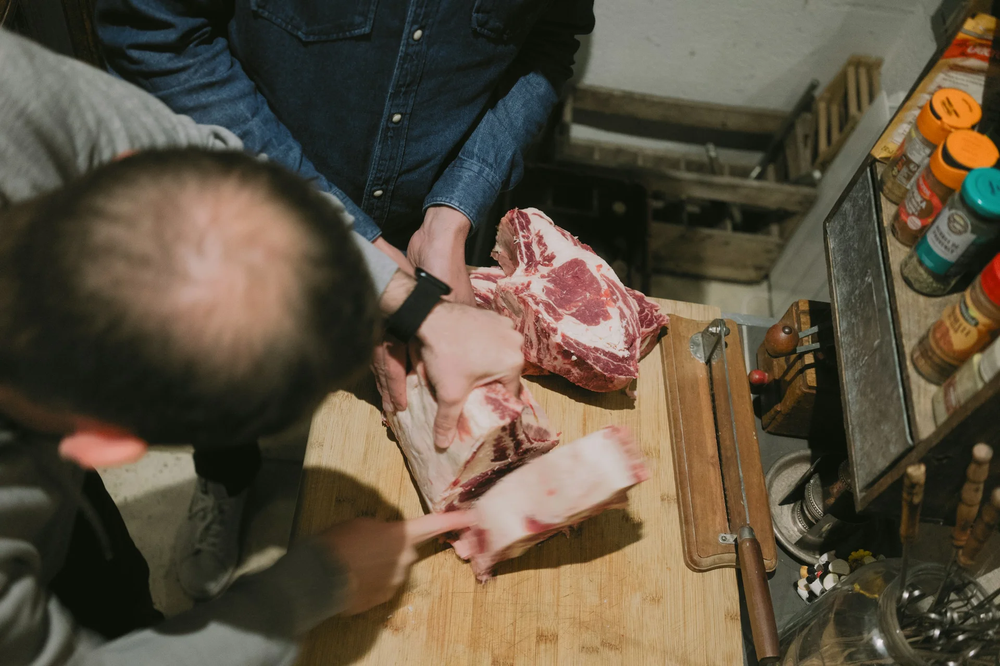

Cows
Beef homekill
Your own steer or cow, broken down into roasts, steak, schnitzel and mince and packed for the freezer.
Bring us your beast and we'll process it the way your family eats it. Lamb racks, steak and mince over the counter too.
The four animals on our sign, plus the butchery work in between. Call Stew to talk through yours.

Your own steer or cow, broken down into roasts, steak, schnitzel and mince and packed for the freezer.

Your pig processed into chops, roasts and the rest. Ask us what's possible.

Racks, chops, legs and shoulders, or the lot minced if that's how you use it.

Deer on the sign for a reason. Ring ahead to talk about yours.

Got meat that needs mincing or cutting down? Bring it in and the team will sort it.

Pop in for lamb racks, rump steak and the rest of what's in the cabinet. Ring ahead if you're after something particular.
Photos marked "stock" are examples. The shop photo is South Waikato Homekills' own.

You'll know the shop by the sign: South Waikato Homekills, with a cow, a pig, a sheep and a deer across the front. That's the job. Farmers, lifestyle blocks and families from around Tokoroa bring their animals to Stew and the team to be processed for the freezer.
People also call in off the main road for meat over the counter. One customer stopped on the way home from Auckland for lamb racks and left with "some of the best beef rump steak" they'd had in a long time.
Owner
Picks up the phone, books your animal in and talks you through the cuts and how you want it packed.
In the butchery
The crew customers call "friendly" and "awesome people to deal with", turning your beast into freezer-ready packs.
Word for word from South Waikato Homekills' Google profile.
"I stopped off here on my way home from Auckland to Ohakune to get some lamb racks. I ended up also getting some of the best beef rump steak that I can remember having in a very long time! …"
"We had some mutton minced up by the friendly team who sorted it out quickly and for an extremely good price. Cheers! Will definitely use for any other future butchery work we need"
"Get our beasts done with Stu awesome people to deal with. Good butcher."
"Very nice n polite people, great place to buy meat at great prices"
A quick Google review helps other South Waikato families find us.
Cows, pigs, sheep and deer. Give us a ring to book yours in and talk through what you've got.
Call Stew on 027 265 6552 during the week. Have the animal type, roughly how many and where it is ready, and we'll sort a time that suits.
Yes. Tell us the cuts, what you'd like minced and how you want it packed, and we'll process it to suit. If you're not sure, ask and we'll talk you through it.
Yes. Customers call in for lamb racks, steak and more. Ring ahead if you're after something particular so we can check what's in.
It depends on the animal and what you want done, so call us for a price before you book in.
Monday to Friday, 8am to 5pm. We're closed on weekends.
Book your homekill, ask about butchery work or check what's in the cabinet today.
The quickest way to book homekill is a call to Stew.
Call to book homekill Email us about your animal